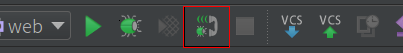

久闻Xdebug大名，但一直没用过，今天尝试了一番，瞬间感觉自己之前的调试方法好low啊，而且还得到了意外的收获，话不多说，上过程。
在用它之前先大概了解下xdebug是干嘛的，这里有篇文章介绍了Xdebug原理。
Xdebug下载安装
根据自己的PHP环境，去Xdebug官网下载相应的扩展
是不是感觉版本比较多，不知道哪个合适，输入以下命令
把输出的内容，粘贴到https://xdebug.org/wizard.php这里，系统会自动推荐给你合适的版本。
下载并解压安装包，cd到你的解压目录下，输入以下命令
在你的php.ini配置中加入以下内容
之前extension前面没加zend，结果一直没反应，这点要注意，Xdebug只能用zend_extension,至于它们之间的区别，请自行Google。
重启nginx或者apache，然后通过phpinfo()查看Xdebug是否安装成功且正常启用。
记住上面的端口号，一般都是默认9000。
配置PhpStorm
进到phpstorm设置
查看Debug port端口是否和刚刚记住的端口号一致，不一致请自行修改为phpinfo()上显示的端口。
给PhpStorm添加一个Server，参考下图设置
添加PHP Web Application，具体步骤参考下图


添加这个是能通过点击菜单Run->Debug->你的web application的名字，然后在浏览器打开一个带有debug标志链接的页面，像下图这样
有用的chrome扩展(Xdebug helper)
chrome应用商店下载
记得在IDE key那里选择相应的IDE。
使用
点亮小电话，电话两头都变绿，开启调试监听，参考下图

建立一个测试文件，像下图那样设置一个断点
运行，参考下图，发现只有d1一个变量，断点起作用了，说明Xdebug配置成功
然后你就可以感受Xdebug的强大了。